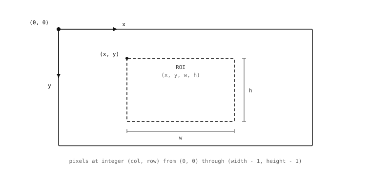

7.2. Coordinates and regions¶
Image processing acts on pixels, and to act on a pixel an algorithm has to address it by coordinate. To act on a rectangle of them, the same thing – the rectangle has to be described in a way the algorithm and the application code agree on. The convention the image module uses for coordinates and rectangles is straightforward, with one detail that catches readers used to mathematical convention rather than computer-graphics convention, and that is worth being explicit about up front.
7.2.1. The pixel grid¶
Pixel (0, 0) is the top-left corner of an
image. The x axis runs to the right, so larger x
means farther right. The y axis runs downward, so
larger y means farther down the image. A
width-by-height image holds pixels at integer
coordinates from (0, 0) through
(width - 1, height - 1); there is no pixel at
(width, 0) or (0, height) – those positions
are the right and bottom edges, one step past the
last actual pixel in each direction.
The downward y axis is the detail mentioned above. A
reader used to graph-paper geometry expects larger
y to mean higher up; here that intuition is exactly
inverted. The reason for the inversion is that
digital sensors and digital displays both work from
the top-left and walk rightward through each row,
top to bottom, and laying pixels out in memory in
the same order makes the relationship between
“position i in the buffer” and “row r,
column c of the image” as simple a piece of
arithmetic as it can be – the position i of
pixel (x, y) is just y * width + x. Every
imaging library agreed on that arrangement decades
ago for the same reason, and the cost is one small
mental adjustment when first working with images.

The image coordinate system: origin at the
top-left, x running rightward, y running downward.
A rectangular region inside the image is named by
its top-left corner (x, y) and its dimensions
(w, h).¶
7.2.2. Rectangles¶
Most operations on an image care less about a
single pixel than about a rectangle of pixels –
an area to look in, a region to copy out, a frame
within a frame to compute statistics over. The form
for naming a rectangle picks the simplest possible
extension of the single-pixel convention: give the
top-left corner’s coordinate, followed by the
rectangle’s dimensions, packed into a four-tuple
(x, y, w, h). The pixels inside the rectangle
are at columns x through x + w - 1 and rows
y through y + h - 1.
The detail worth being explicit about here is that
w and h are sizes, not bottom-right
coordinates. The rectangle (10, 20, 4, 3) covers
columns 10, 11, 12, 13 and rows 20, 21, 22 – twelve
pixels in total – not a region running from
(10, 20) to (4, 3). The convention is
uniform across the module, so once it is
internalised the slip-ups stop, but it does catch
people the first time.
The (x, y, w, h) form turns up in three places
that look distinct but share the convention. The
first is when an image describes its own footprint:
the rectangle covering the whole image is
(0, 0, width, height). The second is when a
detection method returns a result with a bounding
box – a blob, a rect, an apriltag –
and the box is reported back as (x, y, w, h).
The third is when a method has to be told to work
on a sub-region of the image rather than the whole
frame; the roi keyword argument that scopes the
operation takes the same four-tuple.
Picking up a bounding box from one method and
dropping it into the next method’s roi is one of
the most common patterns in image processing. The
bounding box of a coarse first detection narrows the
search area for a finer second one, and the uniform
vocabulary across detection results and method
arguments is what makes that pattern as
straightforward as it is – one tuple form, used
the same way on both sides of the handoff.
7.2.3. Integer addresses, fractional centroids¶
Pixel addresses themselves are integers. A pixel
either is or is not at a given integer column
and row, and asking what is at coordinate
(40.5, 30.7) is not a well-formed question –
there is no pixel sitting at exactly that position.
A handful of quantities the image module derives
from pixel positions are fractional, though, and it
is worth understanding why so the distinction does
not catch the application out later.
The most common case is the centroid – the centre
of mass of a region. For a connected region of
pixels, the centroid in floating-point form is the
average of the member pixels’ positions, weighted by
their density. A region whose pixels straddle two
columns will have a centroid x of, say, 41.6 – a
real position the eye would describe as “the middle
of that region” even though no actual pixel sits at
exactly that x. Detection result objects carry both
forms as read-only properties: an integer pair
(cx / cy, useful when feeding the position
back into something that wants integer pixel
coordinates) and a floating-point pair
(cxf / cyf, useful when the position is
going into a control loop that benefits from
sub-pixel resolution).
The other case is displacement between two frames
measured in the frequency domain. Techniques that
analyse the spectral content of an image rather than
its pixels directly can resolve shifts finer than
one pixel, and they report those shifts as
floating-point (dx, dy) values.
The rule of thumb: pixel addresses are integers; positions and shifts that come out of an algorithm can be floats. Drawing methods accept either form and round floats down to the nearest integer pixel when the result has to land on the grid.
7.2.4. Cartesian and polar¶
The system described so far is Cartesian: every
pixel is named by its horizontal and vertical offset
from the origin. That is the system the bytes are
stored in – pixel i in the buffer corresponds
to the pixel at column i % width and row
i // width, walking the rows from the top – and
it is the system every method operates in by
default.
A second representation is worth knowing about because some algorithms work much better in it. Polar coordinates name each pixel by its distance from a chosen centre point and the angle between it and a reference direction. The pixels of the image have not moved – the bytes are still in the same row-major buffer – but the addressing scheme has switched from “how far right and how far down” to “how far from the centre and at what angle around it.”

The same point P, named two ways: Cartesian
(x, y) from the top-left origin, polar
(r, theta) from a chosen centre.¶
Why bother switching? Because of two identities that turn hard searches into easy ones.
In polar coordinates, rotating the image about the chosen centre is the same operation as translating its pixels along the angle axis – the x direction in the re-projected image. A rotated copy is the original shifted left or right in polar form.
In the log-polar variant – the distance axis uses a logarithmic scale, the angle axis stays linear – scaling the image about the chosen centre is the same operation as translating its pixels along the distance axis – the y direction. A scaled copy is the original shifted up or down in log-polar form.
So an algorithm that has to recognise a known pattern under rotation or scale can do its searching in polar space, where both transformations turn into ordinary translations. Translations are much cheaper to search for than rotations and scales, and the polar re-projection is what makes the substitution available.
Polar coordinates do not replace Cartesian for storing pixels; the bytes always live on the Cartesian grid. The module provides a pair of methods that re-project an image from Cartesian into polar form on demand, the algorithm that needs polar coordinates does its work, and either the result projects back out or the polar-space measurement is used directly. That mechanism is the only reason polar coordinates appear anywhere in the module’s surface.
With Cartesian coordinates for naming individual
pixels, the (x, y, w, h) four-tuple for naming
rectangles of them, and polar coordinates
available when an algorithm benefits from them, an
application has a complete vocabulary for naming
where in an image something is. What is actually
stored at any of those positions is the next layer
of the foundation.